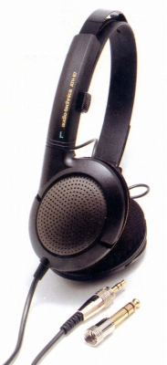
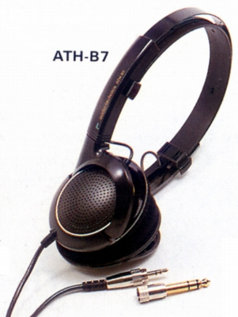
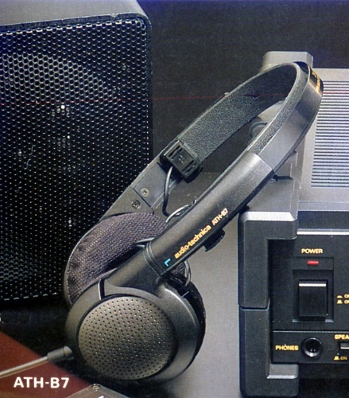

ATH-B7


■価格 12,000円■型式 ダイナミック型オープンエア式■振動板 40mm セラミックコート■インピーダンス 64Ω■再生周波数帯域 20-22,000Hz■許容入力 300mW■感度 104dB/mW■コード 2.5m PCOCC ステレオ3.5/6.3mmプラグ■重量 125g（コード含まず）■発売 1988年■販売終了 1991〜92年頃■備考

テクニカのインデックスへ